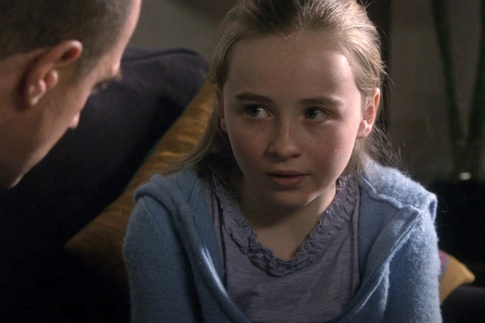
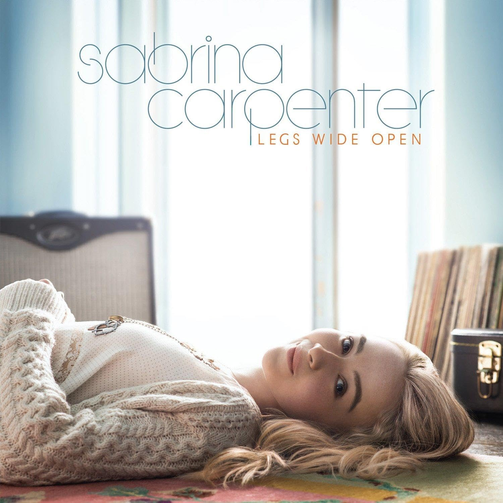
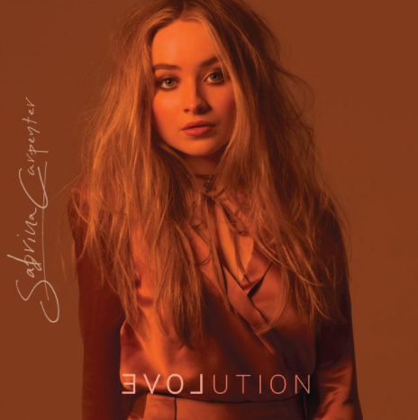
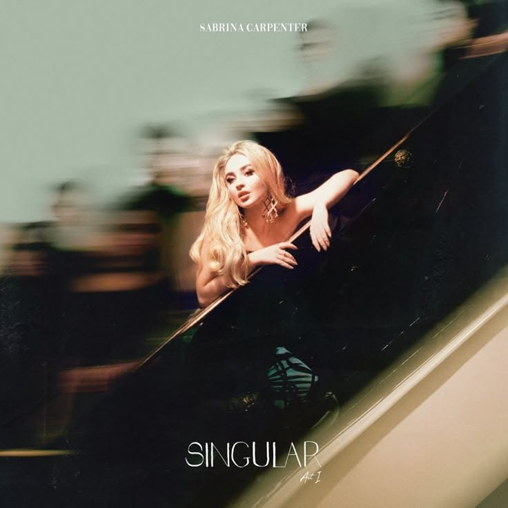
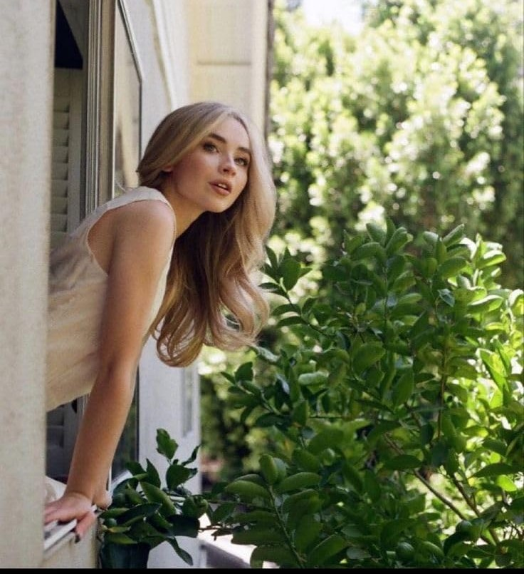
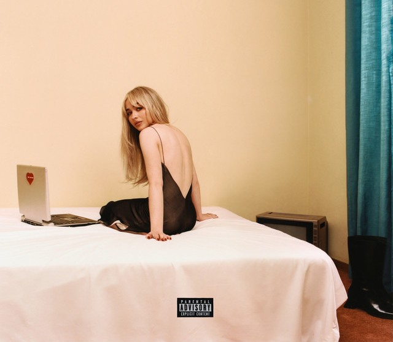
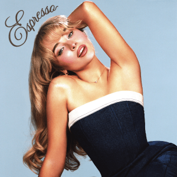
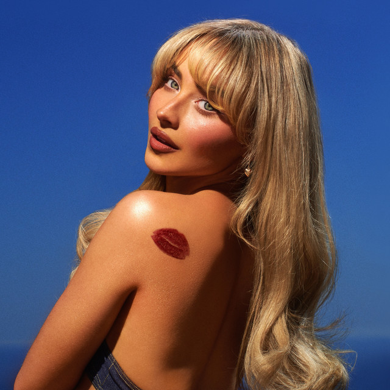
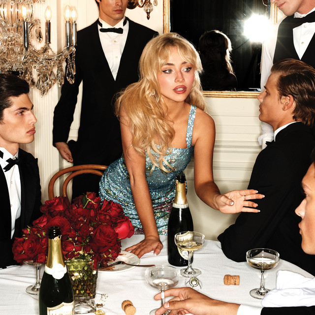

2010 - 2011
Os Primeiros Passos
Sabrina começou a chamar atenção ainda criança, publicando vídeos de covers e participando, em 2010, do concurso online "The Next Miley Cyrus Project", no qual conquistou o terceiro lugar. Em 2011, fez sua estreia profissional como atriz em "Law & Order: SVU", dando início à sua trajetória na indústria do entretenimento.

2012 - 2015
A Ascensão na Disney
Após participar de produções como "The Goodwin Games" e "Sofia the First", Sabrina conquistou seu primeiro grande papel como Maya Hart em "Girl Meets World", série do Disney Channel lançada em 2014. No mesmo ano, iniciou oficialmente sua carreira musical com o EP "Can't Blame a Girl for Trying". Em 2015, lançou seu primeiro álbum de estúdio, "Eyes Wide Open", conciliando a atuação com seus primeiros passos como cantora.

2016 - 2017
Evolution e Amadurecimento
Em 2016, Sabrina lançou seu segundo álbum, "EVOLution", apresentando uma sonoridade mais dançante e uma identidade musical mais madura. Canções como "Thumbs" e "On Purpose" ajudaram a fortalecer sua presença no pop. Em 2017, participou da turnê "Dangerous Woman Tour", de Ariana Grande, como atração de abertura, incluindo apresentações no Brasil. Foi também o período de encerramento de "Girl Meets World", permitindo que Sabrina dedicasse cada vez mais atenção à música.

2018 - 2019
Singular: Uma Nova Identidade
Com "Singular: Act I", lançado em 2018, e "Singular: Act II", em 2019, Sabrina explorou uma sonoridade pop mais eletrônica e sofisticada. Músicas como "Almost Love", "Sue Me" e "In My Bed" marcaram essa fase de transformação artística. Paralelamente, continuou trabalhando como atriz em produções como "The Hate U Give" e "Tall Girl", demonstrando sua versatilidade no entretenimento.

2020 - 2021
Uma Nova Fase
Após um período de transição, Sabrina começou a construir uma nova identidade artística. Em 2021, assinou com a gravadora Island Records e lançou "Skin", single que ganhou grande repercussão após especulações envolvendo a música "drivers license", de Olivia Rodrigo. Apesar das discussões nas redes sociais, Sabrina seguiu desenvolvendo seu próprio caminho musical, preparando o terreno para uma fase mais pessoal e independente.

2022 - 2023
Emails I Can't Send
Em 2022, lançou "Emails I Can't Send", seu quinto álbum de estúdio, marcado por letras mais pessoais, vulneráveis e autobiográficas. Músicas como "Nonsense", "Because I Liked a Boy" e "Feather" ampliaram sua popularidade e conquistaram novos públicos. Em 2023, lançou o EP natalino "fruitcake" e ganhou ainda mais visibilidade internacional ao participar como atração de abertura da "The Eras Tour", de Taylor Swift, incluindo os shows realizados no Brasil.

2024
A Explosão Mundial
2024 foi o grande ponto de virada da carreira de Sabrina. Em abril, lançou "Espresso", que rapidamente se tornou um fenômeno mundial. Em junho, "Please Please Please" alcançou o primeiro lugar da Billboard Hot 100, sua primeira liderança na parada. Em agosto, lançou "Short n' Sweet", seu sexto álbum de estúdio, que também chegou ao topo das paradas. Com sucessos como "Taste", Sabrina conquistou reconhecimento internacional, estreou no Coachella e iniciou sua própria turnê de arenas, consolidando-se como uma das maiores estrelas pop do momento.

2025
O Reconhecimento e a Consolidação
Após o sucesso mundial de "Short n' Sweet", Sabrina alcançou um novo patamar de reconhecimento em 2025. No Grammy Awards, conquistou seus dois primeiros prêmios: Melhor Performance Pop Solo por "Espresso" e Melhor Álbum Vocal Pop por "Short n' Sweet". Em junho, lançou "Manchild", que estreou diretamente no topo da Billboard Hot 100. Em agosto, apresentou seu sétimo álbum de estúdio, "Man's Best Friend", que também estreou em primeiro lugar na Billboard 200, reafirmando sua força na indústria musical.

2026
Uma Estrela Global
Em 2026, Sabrina continuou expandindo sua presença internacional. Em março, retornou ao Brasil como uma das atrações principais do Lollapalooza, quase dez anos após sua primeira apresentação no país. Em abril, estreou como headliner do Coachella e lançou o videoclipe de "House Tour", dirigido por ela e Margaret Qualley. A artista também continuou promovendo o universo de "Man's Best Friend", demonstrando sua evolução de atriz e cantora em ascensão para uma das principais figuras do pop mundial.